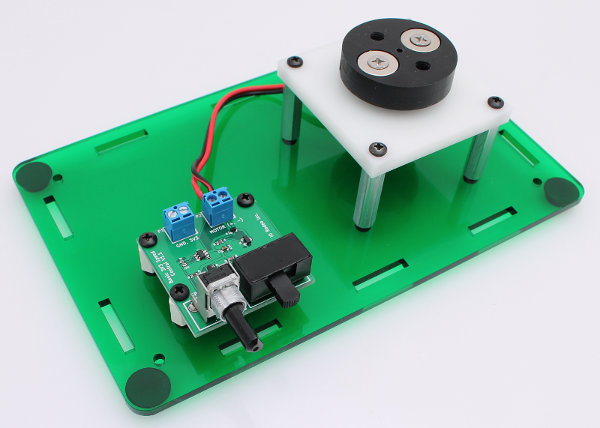
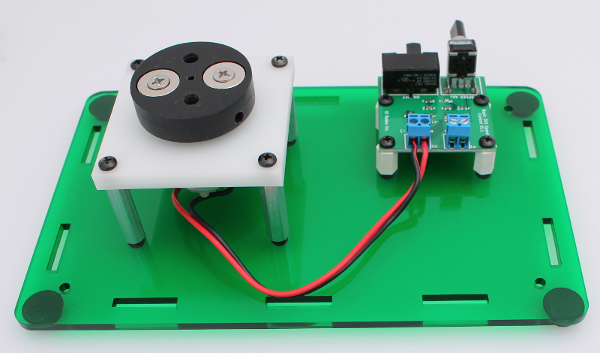
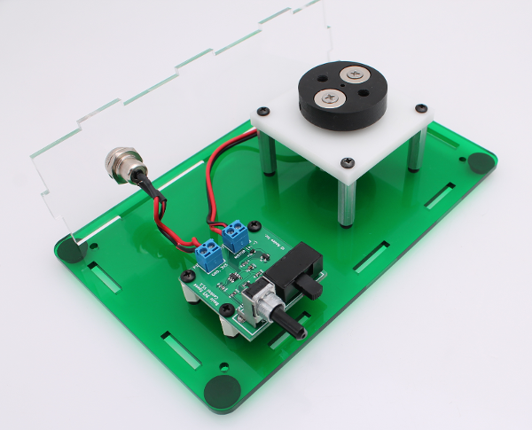
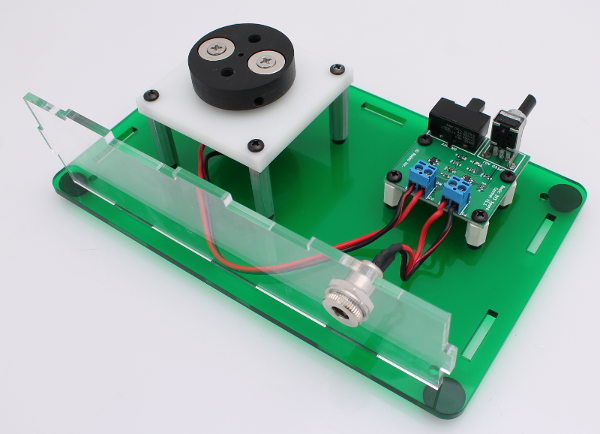
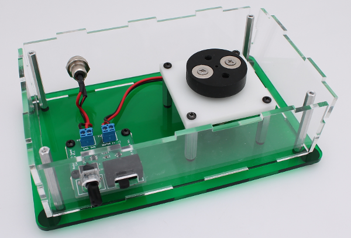
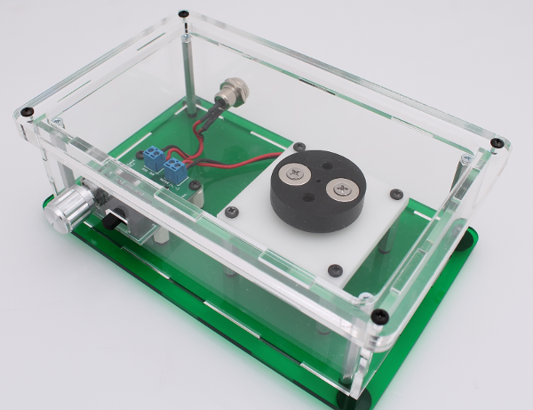
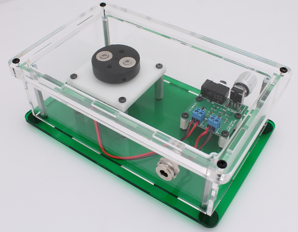

Assembly of the Colorimeter Stir Plate enclosure¶
Most of the build steps are the same as the previous desktop instructions. The main difference is in the positioning of the motor and PCB within the enclosure. Images below highlight these differences and where the parts should be placed.
Connecting motor to the PCB¶
Mount the PCB and motor/magnet hub (assembled as described earlier) onto the base plate as shown in the images below. Connect the wires from the motor to the PCB.


Connecting power to the PCB¶
Mount the power (assembled as described earlier) onto the base plate as shown in the images below. Connect the wires from the power jack to the PCB.


Enclosure sides and standoffs¶
Mount the 4 enclosure standoffs in each corner and place the remainder of the enclosure sides onto the base.

Final step - colorimeter holder¶
Finally, place the 1/4” thick acrylic colorimeter holder onto the top and scew in place.

